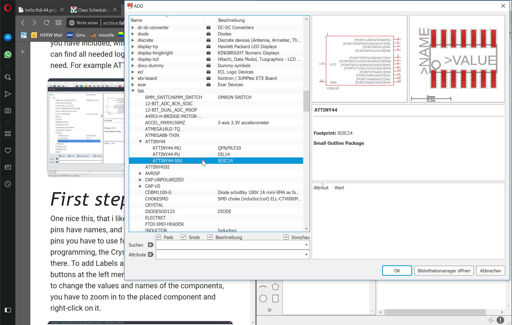

This weeks Assignment
|
Learning outcomes
|
Have you?
|
The task for this week is to re-design the Echo-hello-world Board uploaded in the FabAcademy archive and to retool it with at least an LED and a Button.
For modelling the sketch and afterwards my board I have used Eagle Cad which is also made by Autodesk and can be easily plugged in to Fusion360 for later usage.
| 
I am using a ATTiny44 - 8bit AVR Microcontroller. |
It comes along with:
|
|
The CHKOUT will be used for my PWM Button. I have put y 10K Resistor in between and connected it to VCC and GND. Eagle easily asked me to connect it automatically when I labeled the sides. Also the Label for PWM_Button worked well. |
The task also was to include an LED. When you before did it with a Button, an LED also schould not be the Problem. I included a 499 Ohm Resistor in between and connected it to the Pin and to GND. |
|
This is my very first self made sketch of a PCB. In the first look it was really amazing to me, but I took the wrong Switches. These we do not use in our FabLab. Also the Traces are much too fine(1.2mm) |
Next time, a little bit better than before, but a lot of traces were too near to each other. The arrow on the Top could have been easily solved, but I also wanted to place two traces between one Resistor, which definetily would be too fine for our milling machine. |
This is my final Design with traces in 1.6mm size.
|
For the machine it is mandatory to hide unnecessary stuff, which should not be milled as well. We only want the Top and the Pads. Hide all other layers. |
Also the Names and Values should not be seen and the Pads or the machine kind of engraves all pads with the specific Names. We do not need this. Hide Names and Values! |
|
With the finished PNG from Eagle I imported it into Gimp to either cut out an inside PNG with the shape of my PCB (it should be very small and have an individual shape) |
The Rest is my Outside cut which I only had to invert because black is, what will be milled from the machine. |
|
As usual, to communicate with the machine you need the .gcode which I generate with fabmodules.org.
|
And for the Outside I used:
|
|
|
|
|
|
|
I had a few problems to solve. First I was faced with the problem, that my Surface Pro has some issues by exporting files from my programms in the right scale. (For that purpose I had to use some one elses PC while editing images or exporting files from Eagle) The next problem was that Gimp with my tasks slightly relocates the oudside from the inside cut. This got me to cut out the inner section, happy that everything worked I started the outter and the tool drove entirely through my PCB. I fixed it by moving the PNG slightly to the other side and generating the .gcode again. Another problem was, when I was ready with soldering , I realized that one trace was crossed with a Pad. You can see it below (bottom, 4th traces from downside).
{kind=link}